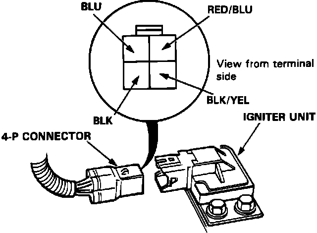

Ignition Control Module: Description and Operation
Igniter Unit Input Test:

Once the control unit has computed a timing setting, based on the signals from the various sensors, the value is converted into a control signal for the ignitor. When the signal again falls (to 0 V), the ignitor interrupts the current in the ignition coil primary windings and the stored energy is released in the form of a high-tension pulse through the secondary windings. The igniter is located on the left fender behind the fuse/relay block.